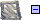
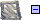
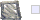
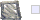

Programación en lenguajes estructurados
Ciclo DAI. IES Los Enlaces
Revisión bucles for
Bucles no fijos
Patrones comunes: bucles interactivos
Patrones comunes: centinela
seguirá ...
Bucles anidados
Ejercicios (1)
- Escribe un programa nombres que pida al usuario nombres de amigos. El programa escribirá los nombres de los amigos en un fichero llamado amigos.txt (cada uno en una línea). Utiliza los dos patrones vistos: interactivo y centinela.
- Escribe un programa diez_primos.py que muestre en pantalla los diez primeros números primos. Crea una función es_primo(num) que devuelva Verdadero o Falso según el número sea primo o no. Ayuda con números primos.
- Diseña un programa que solicite la lectura de un número entre 0 y 10 (ambos inclusive). Si el usuario teclea un número fuera del rango válido, el programa solicitará nuevamente la introducción del valor cuantas veces sea necesario.
- Diseña un programa que solicite la lectura de un texto que no contenga letras mayúsculas. Si el usuario teclea una letra mayúscula, el programa solicitará nuevamente la introducción del texto cuantas veces sea preciso.
Ejercicios (2)
- Según la Conjetura de Goldbach un número par es la suma de dos números primos. Escribe un programa que pida un número par y muestre los dos números primos de los que es suma
- El máximo común divisor de dos números es el mayor divisor posible de todos ellos. Escribe un programa que encuentre el máximo común divisor de dos números usando el algoritmo de euclides
- Escribe un programa que pida números hasta que el usuario introduzca un númeor negativo. Al final muestra cuántos números ha introducido el usuario y su suma. Modifica el programa para que muestre también el mayor y el menor.
- Tenemos un fichero con números (uno por línea) llamado cuentas.txt que contiene los gastos de una familia en un mes. Escribe un programa que lea el fichero y muestre la suma de los gastos del mes.
- Ahora vamos a procesar un fichero cuentas_por_semanas.txt que tiene los gastos ordenados por semanas. Cadas semana se representa en una línea. Los gastos de la semana están separados por espacios en blanco. Haz un programa que muestre la suma de los gastos del fichero, la media de gasto semanal y la semana que más gastó (número de semana y gastó).
- continuará ...


 


 
